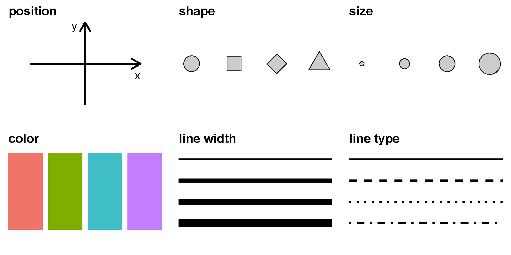

日期：2025 年 10 月 29 日 | 时长：30-45 分钟
把数字、类别等抽象信息转化为视觉元素，让人类的大脑能够快速感知规律、趋势和异常。
在图中画一个点，这个点可以拥有以下属性：
这些属性统称为 图形属性（aesthetic attributes），下图 1 展示了常用的视觉元素：

对应到 ggplot2 中的 aes() 参数：
| 视觉元素 | ggplot2 参数 |
|---|---|
| 位置 | x, y |
| 颜色 | colour, fill |
| 形状 | shape |
| 大小 | size |
| 透明度 | alpha |
| 线宽 | linewidth |
| 线型 | linetype |
ggplot2 是 R 中最流行的绘图包，2024 年 CRAN 下载量已超过 16717239 次。它由 RStudio 首席科学家 Hadley Wickham 在 2005 年博士期间开发。
ggplot2 的核心思想是 图形语法（Grammar of Graphics）：
一张统计图形 = 数据 → 几何对象（geom） → 图形属性（aes） 的映射
通俗说：把数据的数值映射成点的 位置、颜色、大小 等视觉元素。
ggplot(data = <DATA>) +
<GEOM_FUNCTION>(mapping = aes(<MAPPINGS>))
使用 diamonds 数据集绘制克拉数 vs 价格的散点图：
library(ggplot2)
diamonds <- read_csv("lesson1/diamonds.csv")
ggplot(diamonds, aes(x = carat, y = price)) +
geom_point()
ggplot(diamonds, aes(carat, price, color = cut)) +
geom_point(alpha = 0.6)
# 计数柱状图
ggplot(diamonds, aes(cut)) +
geom_bar(fill = "steelblue")
# 数值柱状图
diamonds %>% count(cut) %>%
ggplot(aes(cut, n)) +
geom_col(fill = "darkorange")
ggplot(diamonds, aes(price)) +
geom_histogram(bins = 30, fill = "lightgreen", color = "black")
ggplot(diamonds, aes(carat, price)) +
geom_point() +
theme_minimal()
ggplot(diamonds, aes(carat, price)) +
geom_point() +
labs(title = "钻石价格与克拉数关系",
x = "克拉数 (carat)",
y = "价格 (USD)")
ggplot(diamonds, aes(carat, price, color = clarity)) +
geom_point() +
scale_color_brewer(palette = "Set1")
# 价格分布
ggplot(diamonds, aes(price)) +
geom_histogram(bins = 40, fill = "#69b3a2") +
labs(title = "钻石价格分布")
wages <- read_csv("lesson4/data/wages.csv")
ggplot(wages, aes(height, earn)) +
geom_point(alpha = 0.5) +
geom_smooth(method = "lm", color = "red") +
labs(title = "身高与收入关系")
{kind=link}